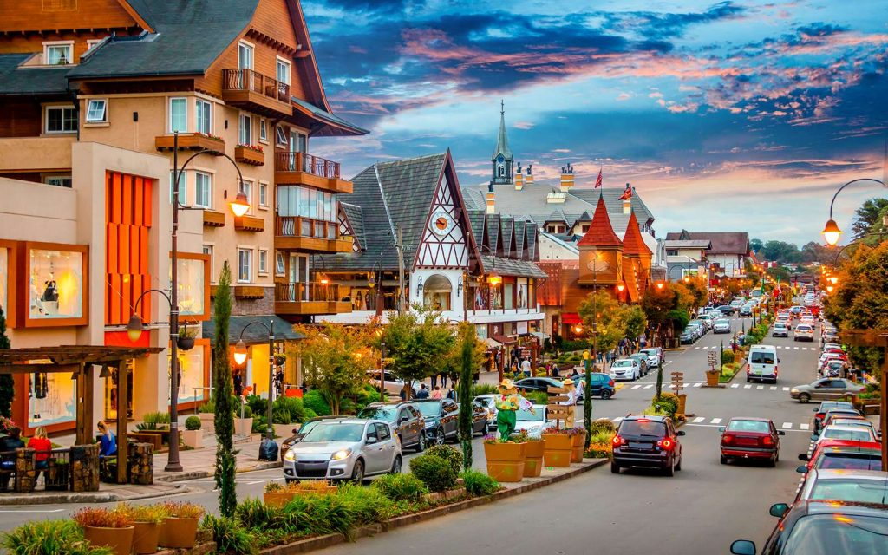

Gramado is a small city in the state of Rio Grande do Sul, about 115 kilometers north of Porto Alegre. It was settled in the late 1800s by German and Italian immigrants, and you can still see their influence today in the steep roofs, the stone houses, and the flower gardens along almost every street.
What I like most about Gramado is that it looks like a little town in Europe, except it is not: it sits in the Serra Gaúcha, the highlands of southern Brazil. The city is about 830 meters above sea level, so the winters are genuinely cold, which is rare in this country. My favorite place there is Lago Negro, a small lake surrounded by pine trees where visitors rent swan-shaped paddle boats.
